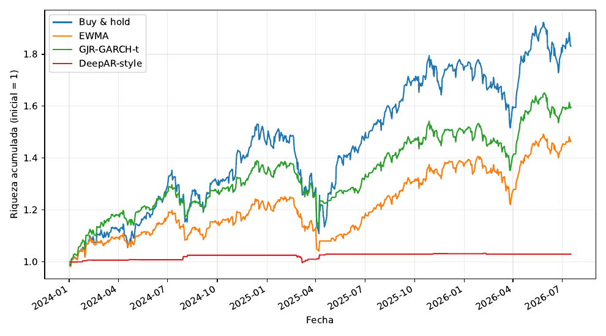
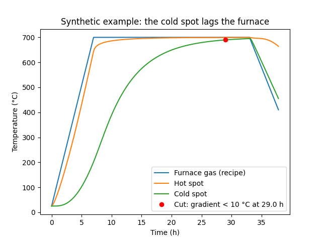
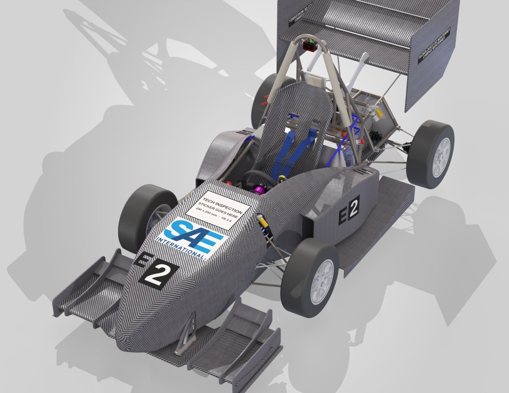
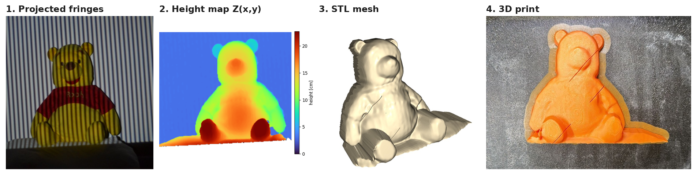
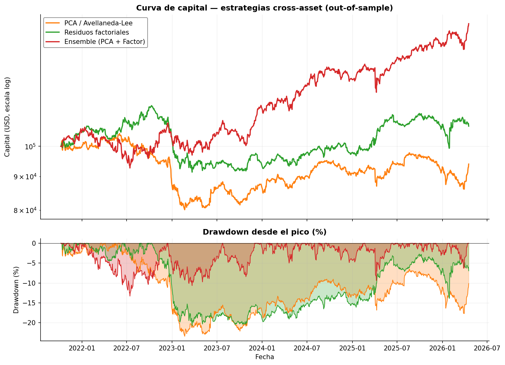
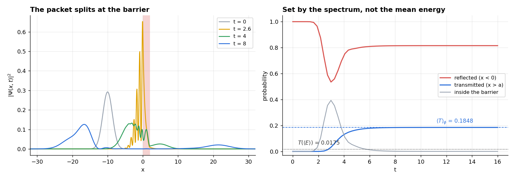
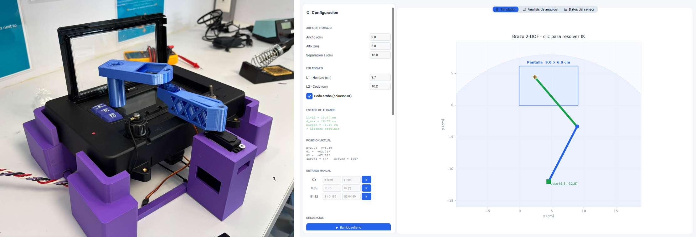
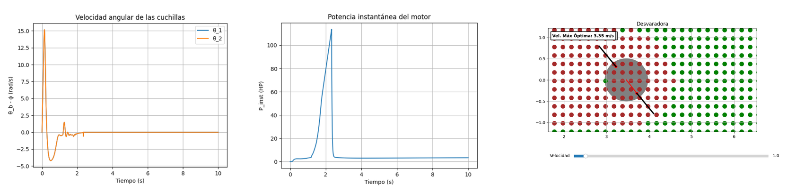
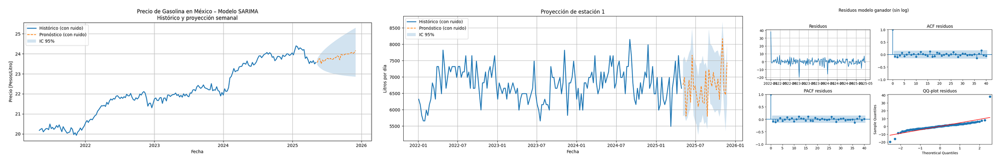

Engineering, scientific computing and quantitative research.
01
Options risk
Monte Carlo
TypeScript
RiskGate
A rules-first checkpoint for deciding whether an options trade deserves capital.

Out-of-sample cumulative wealth compares the exit-forecasting approaches with a buy-and-hold benchmark.
The engine combines market regime, technical setup, option quality and trade-plan discipline into a continuous score. Hard stops reject trades that violate non-negotiable constraints; accepted trades continue to Monte Carlo probability-of-profit analysis and Kelly-capped position sizing. The decision path stays explicit and auditable instead of hiding behind a black-box model.
Key output Approve, reject or resize before the order is placed.
A thermal digital twin and coil-load optimizer for industrial bell annealing.

The cold spot heats several hours behind the furnace atmosphere and determines when the cycle can safely end.
The model solves anisotropic heat transfer through wound steel coils and follows the cold spot that governs the cycle. A recrystallization layer connects temperature history to material properties, while a simulated-annealing optimizer searches for stronger load configurations under real production constraints.
Validated result 12.6 °C cold-spot RMSE; production trials shortened cycles by 8%.
Powertrain and cooling design for an electric Formula SAE car.

The complete Tec Racing FSAE EV, integrating the drivetrain and cooling design into the finished vehicle.
The project sizes an EMRAX 228 chain drivetrain and a dual-radiator liquid-cooling loop around packaging, performance and competition constraints. A second analysis rebuilds the original calculations, checks the assumptions and identifies a legal operating point instead of treating the first design as final.
Design point 48.2 °C predicted motor-inlet temperature.
A camera and mini projector turned into a structured-light 3D scanner.

The complete reconstruction path, from light projected onto the object to a physical printed copy.
The system projects phase-shifted fringe patterns, recovers wrapped phase and combines multiple frequencies to remove ambiguity. After calibration, triangulation converts the optical measurements into a surface that can be cleaned and exported as a 3D-printable STL.
Complete pipeline Projected fringes to a printable three-dimensional mesh.
A market-neutral strategy built from common structure across 32 exchange-traded funds.

Out-of-sample equity and drawdown paths for PCA, factor-residual and ensemble implementations.
PCA and factor regressions isolate residual price movements, which are modeled as Ornstein–Uhlenbeck processes and converted into entry and exit signals. The research includes transaction costs, walk-forward checks, sensitivity tests and a paper-trading implementation rather than stopping at an in-sample backtest.
An analytic and numerical study of quantum tunneling in the time domain.

The propagated packet splits at the barrier; its final probabilities are checked against the spectral prediction.
Scattering eigenstates are combined into a Gaussian wave packet and propagated against a rectangular barrier. Numerical integration and animations make reflection, transmission and the Hartman effect visible, while independent checks ensure that the time-domain behavior agrees with the spectral prediction.
Verification Transmission agrees with theory to roughly one part in 10⁴.
A two-axis instrument that maps brightness across a display automatically.

The finished instrument and the control application used to position it over a display.
A 3D-printed arm positions a VEML7700 light sensor using inverse kinematics, custom electronics and a Python control application. The project also characterizes the sensor rather than assuming its readings are correct, turning a robotics prototype into a repeatable measurement tool.
Calibration 2.3% measurement error after a one-point correction.
A first-principles model of an agricultural cutter and the redesign it motivated.

The simulator connects transient blade motion and engine power with the cutter's field operation.
A Lagrangian model captures the rotor, free-swinging blades and a real engine torque curve to predict spin-up and steady operation. Once the energy demand was understood, the disc geometry was redesigned and checked structurally instead of optimizing mass in isolation.
Station-level forecasts designed for inventory decisions, not just model fit.

Forecasts are shown with uncertainty bands and residual checks, not as unsupported point estimates.
SARIMA models estimate gasoline demand and fuel prices across five stations, with AIC order search, residual diagnostics and 95% prediction intervals. Out-of-sample tests compare the models with a naive baseline and separate the series that are genuinely forecastable from those that behave like random walks.
Out-of-sample result Gasoline-demand error improved by 17–21% over the naive forecast.